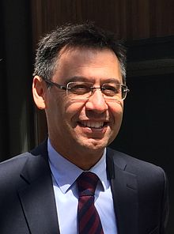
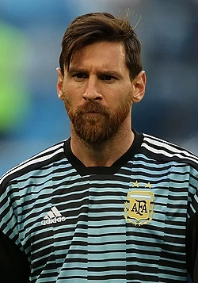

La section football du FC Barcelone est un club de football espagnol fondé en 1899, basé à Barcelone et qui évolue dans le championnat d'Espagne de football. Le Barça est le troisième européen au classement des clubs de football du XXᵉ siècle décerné par l'IFFHS et le club européen le plus titré du XXIᵉ siècle.
Le Camp Nou qui signifie en catalan « nouveau stade ») est un stade de football, situé à Barcelone dans le district des Corts, en Espagne. Le FC Barcelone en est le club résident depuis son inauguration. Avec une capacité de 99 354 places, le Camp Nou est le plus grand stade d'Europe et le douzième plus grand stade du monde.
Josep Maria Bartomeu i Floreta, né à Barcelone le 6 février 19631, est un chef d'entreprise espagnol nommé à la présidence du FC Barcelone le 23 janvier 2014 à la suite de la démission de Sandro Rosell2. Le 18 juillet 2015, il est élu président.
 Lionel Messi, parfois surnommé Leo Messi, né le 24 juin 1987 à Rosario, est un footballeur international argentin évoluant au poste d'attaquant au FC Barcelone. Sextuple Ballon d'or et Soulier d'or européen, Messi est vu comme l'un des meilleurs joueurs de tous les temps. Joueur créatif et complet, il est un buteur et passeur prolifique détenteur de nombreux records : septuple vainqueur du Pichichi, il est le meilleur buteur de l'histoire du championnat d'Espagne, du FC Barcelone, de la sélection argentine, et le deuxième meilleur buteur de l'histoire de la Ligue des champions. Auteur de plus de 700 buts en carrière et impliqué sur plus de 1000 buts, il est actuellement le septième meilleur buteur de l'histoire du football en matchs officiels et le meilleur passeur du xxie siècle.